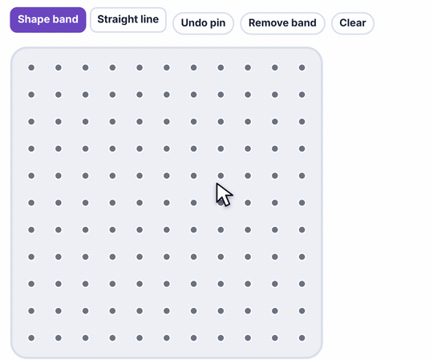

What it is
Mistakes cost nothing. Move one band and the shape changes, so students try more ideas.
- K–2: make shapes, count sides and corners.
- Grades 3–5: area by counting squares, right angles, parallel sides, symmetry.
How to use the tool
- Press on a pin and stretch the band to another pin.
- Keep going pin to pin. End on the first pin to close the shape.
- Drag a corner to a new pin to change the shape.
- Count the sides and look for square corners.

Try this with your class
Make a shape with an area of 4 squares. Now make a different one.
- Most start with a 2 × 2 square. Then a 1 × 4 rectangle.
- Push for more: an L shape? A shape with a slanted side?
- Ask: do they all have the same perimeter?
Watch for
Counting pins, not spaces.A side that touches 3 pins is 2 units long.
Half squares.A slanted side cuts squares in half. Two halves make one.
Real bands snap.On the kit board, stretch bands low and away from faces.
Try it yourself
Based on: Math Learning Center, stretching young minds with geoboards.